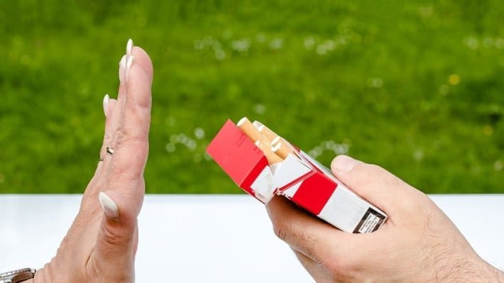
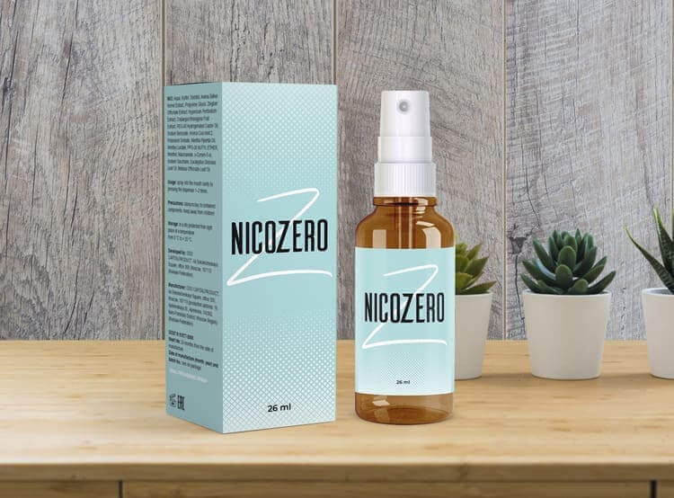

Egy nap alatt könnyedén leteheti a cigit, akkor is, ha amióta csak az eszét tudja, dohányzik!

Miklós Cecília,
Amióta az eszemet tudom, le se tettem a cigit a kezemből. Harmincöt szerencsétlen évet szenteltem a nikotin fogyasztásának, és a 44. születésnapomon fogtam magam és leszoktam. Persze nem varázsütésre, de gyorsan és könnyedén. Tehát az út még a leglustábbnak is járható.

Én hülyeségből kezdtem el dohányozni
14 éveskoromban szívtam el az első cigimet. Mint minden dohányos, én sem gondoltam arra akkor még arra a mocsárra, ami magával ránthat.
Először ez csak valami gyermeki csíny volt, aztán megtanultuk rendesen letüdőzni, majd pedig szenvedtünk az elvonási tünetektől a családi nyaralásokon.
Sem a megtalált cigaretták miatt kapott anyai kioktatások, sem a szándékosan demonstrált szívszorító videók megtekintése, amelyekben súlyosan beteg dohányosok szenvedéseivel igyekeztek befolyással bírni rajtunk, nem tántorítottak el ettől a káros “kis” szokástól, de ugyanúgy nem érdekelt minket, milyen pillantásokat vetnek ránk azok, akik rajta kaptak minket az iskola sarkán, amikor cigiztünk.

Az iskola után még nagyobb szabadságot kaptunk. Az egyetemen már úgy füstöltem, mint egy komoly vállalkozás munkása vagy egy bányász. Így jutottam el a napi két csomagig, ami már a lelkiismeretemet is fojtotgatta.
Borzasztó dohány szagot árasztottam magamból éjjel-nappal. A cigaretta szaga beivódik a hajba, beissza magát a ruhákba, és még a Chanel se menti meg az embert. Mit is mondhatnék, még az púderes pamacsom is bűzlött!
Mindezzel teljesen tisztában voltam, de tehetetlen voltam a bennem élő szörnyeteggel szemben, amely mindig csak nikotint akart. Jó a hangulat, muszáj rágyújtani, ha pedig rossz a hangulat, ez még inkább igaz!
A cigaretta egyszerre mentett meg és tett tönkre. A bőröm állapota romlott, a tizenéves pattanásokból nagy érett gumók lettek, megjelentek a szarkalábak a szemeim körül, 5 évvel hamarabb, mint az én nem dohányzó anyámnál.
A fogaim sárgában játszottak, és a férfiak többször nem is voltak hajlandók megcsókolni a számból áradó kellemetlen szag miatt. Így komplexusok jelentek meg nálam, de még azok sem voltak képesek a megfelelő ösvényre terelni engem.
Alig több mint 30 éves voltam, amikor rájöttem, hogy milyen nagy a probléma. Az állandó bűz, a folyton ott ülő gondolat okozta stressz, hogy mindjért elfogy a doboz cigim, és az állandó ideg, amikor nem gyújthattam rá, annyira elegem lett ebből, hogy életemben először döntöttem úgy, hogy leszokom.

Nem tudom, ki az, aki képes tiszta akaraterővel megszabadulni a függőségétől. Én két hónap nikotin megvonás után csak egy bérletet nyertem a pszichológushoz. Ami végül csak egy szitkozódással végződött.
E két hónapnak minden napja olyan volt számomra, mint egy próbaidő a pokolban, ami nem akart véget érni. Megettem felfaltam, ami az utamba került, csak hogy oldjam valahogy a feszültséget. A mérlegen lévő szám arányosan nőtt az önutálatommal.
Egyszerűen minden bosszantott, szó szerint minden! A kolléga új frizurája, a könyvelő hangosabb lélegzetvétele, egy csúnya ember a metróban. Mindenből elegem lett, de főleg saját magamból.
Idegösszeroppanás és undorodtam magamtól.
Semmi jó nem volt kilátásban, amíg egyszer csak úgy döntöttem, hogy veszek egy csomag cigit, mert már nem tudok tovább így élni.
Az első cigaretta ízre elég pocsék volt, de olyan mohósággal és örömmel szívtam magamba, amilyen mohósággal csak egy csecsemő tud enni.
Ugyanakkor megvetettem, gyűlöltem és sajnáltam magam. A nikotinfüggőség rabszolgává tett és túszt csinált belőlem. A cigaretta segített, hogy kevesebbet egyek, hogy jobban érezzem magam valaki más társaságában. De amint nem dohányzók közé kerültem, szégyelltem magam: Igen, én vagyok az, aki unalomból füstöl.
Persze, még jó pár alkalommal megpróbáltam leszokni. Minden gyógyszertári, ájurvédikus és más sámán cuccot összevásároltam, de cserébe semmit sem kaptam az üres pénztárcán és a keserű csalódottságon kívül: Még egy utolsót elszívok, és leteszem”.

Az új alkalmazott leszoktatott mindenkit a cigiszünetekről.
Már majdnem lemondtam az egykori vágyról, hogy leszokjak a dohányzásról, amikor feltűnt egy új kolléga, aki egyfolytában az egyedi és különleges módszeréről beszélt, hogy hogy lehet letenni a cigit egykettőre.
Én alapvetően fittyet hánytam a vele való beszélgetésekre, mert úgy véltem, hogy a nikotinfüggőségről annyit, mint én, kevés ember tud még. Mi újat mondhatna ez a pimasz kölyök, aki még az energiájával is csak irritál engem?
Mint később kiderült, valóban tudott érdekeset mondani még a magamfajta témában tapasztaltabb személynek is. Mégpedig a neurotranszmitterek működését stimuláló spray létezéséről, amely teljesen mértékben gátolja a dohányzás utáni vágyat.
Nem térnék ki a részletekre, de Imi csak rávett, hogy meghallgassam, és így mesélt nekem az -ről. Ez nem egy olyan készítmény, amelyet a nagylelkű gyógyszerészek már évek óta ajánlanak nekem.
Ez egy belga tudósok által kifejlesztett készítményt, akik több mint 10 évet szenteltek az antinikotin spray megalkotására. Nem tartalmaz nikotint, ellentétben a gyógyszertári termékekkel. De van benne gotu cola, ginzeng és cikória, amely úgy hat az emberre, hogy eszébe se jusson rágyújtani.
De ez csak leegyszerűsítve, a tudományos részéről olvashattok a gyártó honlapján. És a gyakorlatban minden úgy történt, akár csak egy tündérmesében.
Hogy szoktam le végül a dohányzásról
Elkezdtem szedni az -et anélkül, hogy reménykedtem volna az eredményben. Mi több, szinte biztos voltam benne, hogy ha le is szokok a dohányzásról, hamarosan úgy is visszatérek hozzá. Észre sem vettem, hogy jutottam el arra a pontra, hogy már csak egy csomaggal szívtam egy héten.
Tisztán emlékszem arra a pillanatra, amikor arra gondoltam, hogy miért is dohányzom most tulajdonképpen, hiszen nem is kívánom. Egy kicsit megkésve bár, de megértettem, hogy a dohányfüsttől már undorom van, az íze gusztustalan, és nem akarok többé dohányozni!
Maradt egy doboz cigim, még vagy egy hónapig hordoztam magammal mindenhová, csak vészhelyzetre. De soha nem jött el az a „vészhelyzet“. Először megszokásból nyúltam a cigiért. Kivettem, kicsit fogdostam a kezemben, majd visszatettem a táskámba.
Éreztem a kellemes illatokat, a tüdőm teli volt levegővel, és a fejem pedig olyan volt, mintha általános tisztításon vett volna részt. Sok szép dolog van, amivel lehet még foglalkozni a nikotinfogyasztás helyett.
Már korábban is tudtam ezt, de mindig is féltem arra gondolni, hogy abba kell hagynom a dohányzást, és ki kell váltanom valami mással ezt az erős vágyat. Ki gondolta volna, hogy néhány megváltoztathatja még a világnézetemet is!

Már több mint két éve nem dohányozom, mióta rájöttem, hogy függőségem van. Ez alatt az idő alatt energikusabbá váltam, jobb lett a közérzetem, de ami a legfontosabb, hogy elkezdtem jól aludni, végre ki tudtam aludni magam!
Nem dohányozni igazi boldogságot jelent, amit csak a cigarettáról való végleges lemondás után értékel csak igazán az ember. Ha ti is ezt szeretnétek, de talán féltek, pont mint én korábban, mindenképpen próbáljátok ki az -et . Ez megváltoztatja az életed, ígérem.
P. S. a gyártó honlapján 50% kedvezménnyel rendelheti meg a -et.


Denkén Mária
Tényleg van még olyan, aki nem tud az -ről?
Tarlósi Petra
Azt hiszem, sokaknak újdonságként szolgálhat az a hír, hogy Amerikában az -et az orvosok írják fel, és ők is elrendelhetik a szedését. Remélem, hogy nálunk is hamarosan komolyabban veszik majd a készítményt.
Berecz Judit
Én is az szoktam le. A nikotinos rágók, tapaszok és spray-k össze sem hasonlíthatók vele, ég és föld! Hét hónappal ezelőtt letettem, és azóta sem dohányzom, nem is kívánom.
Balla András
Tényleg ennyire segít? Nem akarom újra fölöslegesen pénzt kidobni az ablakon
Papp Károly
Figyelj, ami engem illet, ez volt a legjobb pénzügyi befektetés az életben. Egyszer lemondasz egy csomag cigi áráról és megveszed ezt, de aztán egész életedben nem kell költened erre a szarra. Én minden nap félretettem egy lezárt számlára azt az összeget, amit cigarettára költöttem. Körülbelül 40 kiló gyűlt már össze:))
Ambrus Szabolcs
Jó kis megtakarítás. Akár egy kocsira is összegyűlik így. És gyorsan hat?
Zeke Tamás
Én vagy 7 évig dohányoztam. Azt hittem, bármelyik pillanatban le tudom tenni, ha majd akarom. De aztán nem annyira ment, mikor kéne. Még akkor sem, mikor az egészségem veszélybe került (onkológia gyanúja merült fel), de még így sem tudtam letenni. Nagy hála a feleségemnek, hogy kezébe vette a dolgokat, különben egy cigarettával a fogaim között patkoltam volna el. Megvette nekem ezt az -et és rávett, hogy használjam. Nem vártam csodát, de a kíváncsiság kedvéért mégis csak kipróbáltam. És kb. úgy hatott, hogy egyszerűen csak mint egy gyogyós, kezdtem megfeledkezni a cigarettáról. Egyszer aztán elfelejtettem venni cigit a boltban, és utána már nem is mentem el, hogy vegyek. Másfél éve nem cigizem. Szeretném abbahagyni az ivást is, tiszta aranyember lennék már.
Pethő Irén
Emberek, milyen jó érzés is ez, szavakkal ki sem tudom fejezni!!! Mennyi pazaroltam el erre az átkozott függőségre az életemből! Állandóan bűzlő haj, ruhák, kezek... Undorodtam, de nem tudtam letenni. Dicsőség az orvosoknak, akik feltalálták az -et !!
Cserba István
Ki használta már az -et, mennyit segít?
Fehér Albert
Mindenkinél máshogy, attól függ, hogy mióta cigizel és mennyire vagy elfogult. A barátaimmal kísérleteztünk. Engem egy héttel később elkezdett zavarni a cigaretta szaga, a másik két barátom 10 nap után le is tette. Egyikük majdnem egy hónapig szedte az -et. De 35 éve cigizett.
Mende Péter
Rendeltem egy pár csomagot, hogy kipróbáljam, remélem, hogy segít. Apropó, ma van az akció utolsó napja. Holnaptól az árak megemelkednek.
Gere László
Ez az, még sikerült megrendelni kedvezményes áron!!! Már várom a csomagot, azt ígérték, hogy gyorsan kihozzák. Végül én is leszokom a dohányzásról, és elkezdem gyűjteni a pénzt Thaiföldre :))